First look
Initially, we are going to load the data from the package to be using for the exploratory data analysis.
data("all_waves", package = "BenzoCovid")First, let’s take a glimpse and skim the dataset.
dplyr::glimpse(all_waves)
#> Rows: 781
#> Columns: 45
#> $ age <dbl> 47, 34, 57, 52, 32, 44, 29, 57, 33, 29, 49, …
#> $ sex <fct> Female, Female, Female, Female, Male, Female…
#> $ color <fct> Branca, Branca, Branca, Branca, Branca, Bran…
#> $ education <fct> Pós- graduação (incompleta ou completa), Ens…
#> $ state <fct> São Paulo, Rio Grande do Sul, São Paulo, Rio…
#> $ region <fct> Sudeste, Sul, Sudeste, Sul, Centro-Oeste, Su…
#> $ sexual_orientation <fct> Heterossexual, Bissexual, Heterossexual, Het…
#> $ heterosexual <fct> sim, não, sim, sim, sim, sim, não, sim, sim,…
#> $ household_income <fct> D, D, B, A, D, E, D, C, D, B, D, C, B, E, B,…
#> $ contact_covid19 <fct> Não, Não, Não, Não, Não, Não, Não, Não, Não,…
#> $ risk_group_covid19 <fct> Não, Não, Não, Não, Não, Sim, Não, Sim, Não,…
#> $ number_people_house <dbl> 2, 1, 3, 3, 2, 2, 2, 5, 2, 2, 3, 3, 2, 2, 4,…
#> $ benzofreq_w1 <fct> Não usei, Semanalmente, 1 ou 2 vezes, Não us…
#> $ benzofreq_w2 <fct> Não usei, 1 ou 2 vezes, Não usei, Não usei, …
#> $ benzofreq_w3 <fct> Não usei, 1 ou 2 vezes, Não usei, Não usei, …
#> $ family_relationship_w1 <fct> Ruins, Bons, Excelentes, Bons, Regulares, Ex…
#> $ family_relationship_w2 <fct> Regulares, Regulares, Bons, Regulares, Excel…
#> $ family_relationship_w3 <fct> Ruins, Regulares, Bons, Bons, Regulares, Exc…
#> $ friend_relationship_w1 <fct> Bons, Bons, Excelentes, Ruins, Ruins, Excele…
#> $ friend_relationship_w2 <fct> Regulares, Bons, Bons, Ruins, Regulares, Bon…
#> $ friend_relationship_w3 <fct> Regulares, Bons, Regulares, Regulares, Regul…
#> $ loving_relationship_w1 <fct> Regular, Não se aplica, Excelente, Bom, Regu…
#> $ loving_relationship_w2 <fct> Bom, Não se aplica, Bom, Regular, Bom, Ruim,…
#> $ loving_relationship_w3 <fct> Excelente, Não se aplica, Bom, Bom, Regular,…
#> $ social_distancing_w1 <fct> Sim, Sim, Sim, Sim, Sim, Sim, Sim, Sim, Sim,…
#> $ social_distancing_w2 <fct> Sim, Sim, Sim, Sim, Não, Sim, Sim, Sim, Sim,…
#> $ social_distancing_w3 <fct> Não, Sim, Sim, Sim, Não, Sim, Sim, Sim, Sim,…
#> $ family_friends_covid19_w1 <fct> Não, Não, Não, Não, Não, Não, Não, Não, Não,…
#> $ family_friends_covid19_w2 <fct> Não, Não, Não, Não, Não, Não, Sim, Não, Não,…
#> $ family_friends_covid19_w3 <fct> Não, Não, Não, Sim, Não, Sim, Sim, Não, Não,…
#> $ diagnostic_covid19_w1 <fct> Não, Não, Não, Não, Não, Não, Não, Não, Não,…
#> $ diagnostic_covid19_w2 <fct> Não, Não, Não, Não, Não, Não, Não, Não, Não,…
#> $ diagnostic_covid19_w3 <fct> Não, Não, Não, Não, Não, Não, Não, Não, Não,…
#> $ sleep_quality_w1 <fct> Bom, Ruim, Bom, Regular, Ruim, Excelente, Re…
#> $ sleep_quality_w2 <fct> Regular, Bom, Regular, Regular, Regular, Exc…
#> $ sleep_quality_w3 <fct> Bom, Ruim, Regular, Regular, Regular, Excele…
#> $ suicidal_ideation_w1 <fct> No, Yes, No, Yes, No, No, No, No, Yes, No, N…
#> $ suicidal_ideation_w2 <fct> No, Yes, No, Yes, No, No, No, Yes, No, No, N…
#> $ suicidal_ideation_w3 <fct> Não, Sim, Não, Sim, Não, Não, Não, Sim, Sim,…
#> $ phq_total_w1 <dbl> 21, 15, 8, 26, 10, 11, 20, 17, 9, 15, 2, 4, …
#> $ phq_total_w2 <dbl> 22, 17, 13, 24, 7, 11, 18, 20, 4, 13, 1, 8, …
#> $ phq_total_w3 <dbl> 7, 22, 8, 27, 1, 10, 18, 20, 12, 11, 3, 6, 1…
#> $ gad_total_w1 <dbl> 12, 12, 12, 17, 7, 14, 18, 17, 18, 11, 3, 0,…
#> $ gad_total_w2 <dbl> 5, 11, 15, 21, 6, 21, 20, 15, 13, 15, 5, 5, …
#> $ gad_total_w3 <dbl> 1, 16, 21, 20, 4, 16, 18, 15, 19, 9, 2, 6, 1…
skimr::skim(all_waves)| Name | all_waves |
| Number of rows | 781 |
| Number of columns | 45 |
| _______________________ | |
| Column type frequency: | |
| factor | 37 |
| numeric | 8 |
| ________________________ | |
| Group variables | None |
Variable type: factor
| skim_variable | n_missing | complete_rate | ordered | n_unique | top_counts |
|---|---|---|---|---|---|
| sex | 0 | 1 | FALSE | 2 | Fem: 675, Mal: 106 |
| color | 0 | 1 | FALSE | 5 | Bra: 452, Par: 200, Pre: 113, Ama: 13 |
| education | 0 | 1 | FALSE | 6 | Pós: 346, Ens: 184, Ens: 170, Ens: 69 |
| state | 0 | 1 | FALSE | 25 | Rio: 212, São: 146, Rio: 69, Min: 53 |
| region | 0 | 1 | FALSE | 5 | Sud: 278, Sul: 278, Nor: 134, Cen: 61 |
| sexual_orientation | 0 | 1 | FALSE | 5 | Het: 642, Bis: 71, Hom: 48, Out: 10 |
| heterosexual | 0 | 1 | FALSE | 2 | sim: 642, não: 139 |
| household_income | 0 | 1 | FALSE | 5 | B: 243, D: 235, C: 157, A: 88 |
| contact_covid19 | 0 | 1 | FALSE | 2 | Não: 678, Sim: 103 |
| risk_group_covid19 | 0 | 1 | FALSE | 2 | Não: 626, Sim: 155 |
| benzofreq_w1 | 0 | 1 | FALSE | 4 | Não: 640, Dia: 65, 1 o: 59, Sem: 17 |
| benzofreq_w2 | 0 | 1 | FALSE | 4 | Não: 640, Dia: 67, 1 o: 58, Sem: 16 |
| benzofreq_w3 | 0 | 1 | FALSE | 4 | Não: 653, Dia: 60, 1 o: 56, Sem: 12 |
| family_relationship_w1 | 0 | 1 | FALSE | 4 | Bon: 374, Reg: 251, Exc: 101, Rui: 55 |
| family_relationship_w2 | 0 | 1 | FALSE | 4 | Bon: 405, Reg: 266, Exc: 73, Rui: 37 |
| family_relationship_w3 | 0 | 1 | FALSE | 4 | Bon: 375, Reg: 287, Exc: 64, Rui: 55 |
| friend_relationship_w1 | 0 | 1 | FALSE | 4 | Bon: 375, Reg: 273, Rui: 74, Exc: 59 |
| friend_relationship_w2 | 0 | 1 | FALSE | 4 | Bon: 361, Reg: 292, Rui: 84, Exc: 44 |
| friend_relationship_w3 | 0 | 1 | FALSE | 4 | Reg: 331, Bon: 312, Rui: 103, Exc: 35 |
| loving_relationship_w1 | 0 | 1 | FALSE | 5 | Não: 270, Bom: 221, Exc: 117, Reg: 113 |
| loving_relationship_w2 | 0 | 1 | FALSE | 5 | Não: 289, Bom: 228, Exc: 122, Reg: 93 |
| loving_relationship_w3 | 0 | 1 | FALSE | 5 | Não: 290, Bom: 198, Exc: 150, Reg: 92 |
| social_distancing_w1 | 0 | 1 | FALSE | 2 | Sim: 732, Não: 49 |
| social_distancing_w2 | 0 | 1 | FALSE | 2 | Sim: 688, Não: 93 |
| social_distancing_w3 | 0 | 1 | FALSE | 2 | Sim: 537, Não: 244 |
| family_friends_covid19_w1 | 0 | 1 | FALSE | 2 | Não: 665, Sim: 116 |
| family_friends_covid19_w2 | 0 | 1 | FALSE | 2 | Não: 633, Sim: 148 |
| family_friends_covid19_w3 | 0 | 1 | FALSE | 2 | Não: 525, Sim: 256 |
| diagnostic_covid19_w1 | 0 | 1 | FALSE | 2 | Não: 774, Sim: 7 |
| diagnostic_covid19_w2 | 0 | 1 | FALSE | 2 | Não: 763, Sim: 18 |
| diagnostic_covid19_w3 | 0 | 1 | FALSE | 2 | Não: 704, Sim: 77 |
| sleep_quality_w1 | 0 | 1 | FALSE | 4 | Reg: 292, Rui: 246, Bom: 203, Exc: 40 |
| sleep_quality_w2 | 0 | 1 | FALSE | 4 | Reg: 321, Bom: 220, Rui: 205, Exc: 35 |
| sleep_quality_w3 | 0 | 1 | FALSE | 4 | Reg: 341, Bom: 223, Rui: 179, Exc: 38 |
| suicidal_ideation_w1 | 0 | 1 | FALSE | 2 | No: 665, Yes: 116 |
| suicidal_ideation_w2 | 0 | 1 | FALSE | 2 | No: 670, Yes: 111 |
| suicidal_ideation_w3 | 0 | 1 | FALSE | 2 | Não: 594, Sim: 187 |
Variable type: numeric
| skim_variable | n_missing | complete_rate | mean | sd | p0 | p25 | p50 | p75 | p100 | hist |
|---|---|---|---|---|---|---|---|---|---|---|
| age | 0 | 1 | 34.85 | 11.48 | 18 | 26 | 33 | 41 | 74 | ▇▇▃▂▁ |
| number_people_house | 0 | 1 | 3.06 | 1.45 | 1 | 2 | 3 | 4 | 10 | ▇▇▂▁▁ |
| phq_total_w1 | 0 | 1 | 12.98 | 6.81 | 0 | 7 | 12 | 19 | 27 | ▅▇▇▆▅ |
| phq_total_w2 | 0 | 1 | 12.18 | 6.85 | 0 | 7 | 11 | 18 | 27 | ▆▇▇▆▃ |
| phq_total_w3 | 0 | 1 | 11.56 | 6.87 | 0 | 6 | 11 | 17 | 27 | ▇▇▇▅▃ |
| gad_total_w1 | 0 | 1 | 11.94 | 5.70 | 0 | 7 | 12 | 17 | 21 | ▃▆▆▆▇ |
| gad_total_w2 | 0 | 1 | 11.06 | 5.75 | 0 | 6 | 11 | 15 | 21 | ▅▇▇▆▇ |
| gad_total_w3 | 0 | 1 | 10.85 | 5.85 | 0 | 6 | 11 | 16 | 21 | ▅▇▆▆▇ |
As we can see in the skim, we don’t have any variable
with missing values. That’s nice!
Anxiety and depression levels by wave
Now let’s create some plots to see the trajectories of the anxiety and depression measures in the sample.
all_waves |>
BenzoCovid::plot_three_waves("phq_total") +
ggplot2::labs(x = "Study wave", y = "PHQ-9 total score mean")
all_waves |>
BenzoCovid::plot_three_waves("gad_total") +
ggplot2::labs(x = "Study wave", y = "GAD-7 total score mean")
Apparently, we were able to see a decline in both measures, which indicates that people were showing remission of symptoms over time.